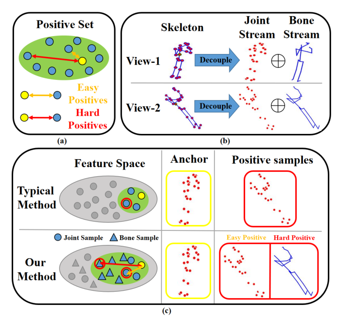

小鼠day12-读代码or读paper
Day12 run demo的问题已经解决 后面可能会需要把那个代码改成python版本 这之后再说 暂时可以先读一下代码或者paper 这边准备先读前面的paper
Cross-Stream Contrastive Learning for Self-Supervised Skeleton-Based Action Recognition
Abstract
随着对比学习的发展，基于自监督骨架的动作识别得到了迅速的发展。现有的方法依赖于在单个数据流中对3D骨架的增强施加不变性，这仅仅利用了简单的正对，限制了探索复杂运动模式的能力。在本文中，我们认为单流对比的缺陷和缺乏必要的特征转换是导致容易正对的原因，因此提出了一个基于骨架的动作表示学习(CSCLR)的跨流对比学习框架。
具体而言，本文提出的CSCLR不仅利用了流内对比对，还引入了流间对比对作为硬样本，以形成更好的表征学习。此外，为了进一步挖掘正对的潜力，提高自监督表示学习的鲁棒性，我们提出了一种正特征变换(PFT)策略，该策略采用特征级操作来增加正对的方差。为了验证我们方法的有效性，我们在三个基准数据集NTU-RGB+D 60、NTU-RGB+D 120和PKU-MMD上进行了大量实验。实验结果表明，我们提出的CSCLR在各种评估协议上超过了最先进的方法。
Introduction
基于骨骼的动作识别在计算机视觉领域一直备受关注，因为它在智能监控、人机交互和混合现实等许多现实应用中发挥着重要作用[12,25,35,43]。它旨在利用骨架关键点识别人类的行为，在复杂背景的动态环境下(如杂乱场景、光照条件)显示出优势[40,52]。在过去的几年里，大多数现有的基于骨架的动作识别方法都是基于监督学习范式的，这需要大量的时间和人力来进行标注。相反，自监督学习范式避免了这种限制，旨在通过探索未标记的骨架数据来学习歧视性的时空动作表征。
几种自监督方法以生成式学习的方式制定借口任务，包括重建输入骨架序列[56]、解决拼图[23]和运动预测[7]。然而，生成式借口任务迫使模型过度关注底层的详细联合特征，而忽略了对下游任务更为重要的高层语义信息。与生成方法中的pretext任务不同，对比学习通常利用特征空间中骨架序列的实例识别。对骨架序列应用不同的增强，从而生成多个视图。然后，基于这些视图构建对比对，并利用固有的一致性约束同时吸引正对和排斥负对[3,15]。基于高级语义特征，对比学习使模型在下游任务中具有优势。
尽管对比学习在该领域取得了成功，但以前的方法依赖于对3D骨架的增强施加不变性，这些正对在特征空间中仍然可能非常相似，即容易正。如图1(a)所示，easy positive分布紧密，随着训练的进行，对损失的贡献越来越小。使用简单的正对，对比pretext任务将很容易完成，从而限制了探索复杂动作模式的能力[5,14,45]。相反，与easy positive相比，hard positive在特征空间中的距离更远，对损失的贡献更大。显然，hard positive可以使对比借口任务变得更加困难，从而有望促进学习更稳健的表征。
在本研究中，我们主要解决了导致正对高相似性的两个重要问题:单流对比的缺陷和缺乏必要的特征转换。首先，在现有的工作中，只有单一的骨架数据流用于设计对比对，而其他数据流没有得到充分利用。实际上，基于原始数据，可以获得多个流(如关节、骨骼和运动流)。已经有一些研究致力于将这些流的预测结果融合到下游任务中[14,21,27,40,53]。然而，在对比预训练阶段，以前的方法通常忽略了多流场景，只在单个数据流中构造对。来自同一信息流的配对，具有相似的内在信息，容易产生正信息。其次，传统方法通常利用数据增强来构造正对[14,21,37,44,53]，但这些对的数据级操作可能无法明确保证它们在特征级别上的差异。同时，不仅可以基于输入数据空间设计多个样本视图，还可以基于特征空间设计多个样本视图[10,49,58]。与数据增强相比，特征变换为设计更有效的训练对提供了明确的解决方案。因此，通过涉及特征级操作，期望进一步降低正对的相似性。
为了解决上述问题，我们提出了CSCLR:一个从多个数据流中提取特征的跨流对比学习框架。对于第一个问题，CSCLR利用不同骨架数据流之间的对应关系，从而建设性地学习有利于下游任务的可转移骨架表示。具体而言，如图1(b)所示，我们生成伴随关节流的骨流。然后，与仅进行流内对比学习的典型方法不同，我们的CSCLR还构建了流间对比对，即每对中的两个嵌入来自不同的源数据流。由于其他数据流中的固有信息与联合流不同，因此期望流间对比对作为硬阳性来制定更好的表示学习(见图1(c))。对于第二个问题，我们提出了正特征变换(PFT)策略，该策略旨在通过特征外推来增加正集中特征的方差。受Mixup[55]和Manifold Mixup[49]的启发，PFT对配对查询和关键特征进行线性外推，并生成用于对比学习的综合正特征。经过PFT后，这些正样本的hardness得到了增强，从而在表示学习中获得了明显的收益。

这是图一，是对文章提出的方法的一个说明：(a)易正对在特征空间分布紧密，难正对分布相对较远。(b)骨骼序列可以扩展为两个视图，然后关节和骨流从两个视图解耦。(c)与典型方法相比，CSCLR不仅强制流内对应(易阳性)，而且强制不同流之间对应(硬阳性)，如关节流和骨流。
本文的主要贡献可以概括为以下几点:
我们提出了一种新的基于自监督骨架的跨流对比学习模型CSCLR，该模型对从不同数据流中提取的成对特征进行对比。与现有的仅使用流内对比的方法相比，CSCLR引入了更多来自其他流的硬样本，从而在下游任务中获得了更强的对比学习效果和更好的泛化性能。
为了获得更健壮的骨架特征，我们设计了一种正特征转换策略，通过对正特征对进行操作来提高其在特征级上的硬度。生成的合成正特征进一步增强了对比学习，使骨架编码器能够学习更有效的表征。
我们对NTURGBD-60、NTU-RGBD-120和PKU-MMD三个流行的基准数据集进行了广泛的实验和烧蚀研究。因此，我们的CSCLR在各种评估协议下实现了最先进的性能，包括线性评估、半监督评估和fin调谐评估。
Method
在本节中，我们首先介绍3.1节中的预备内容。接下来，第3.2节描述了骨架表示的流内对比学习(IntraCLR)和骨架表示的流间对比学习(InterCLR)的流程。然后，我们在3.3节中演示了正特征变换(PFT)。最后，CSCLR的更多细节将在3.4节中介绍。简单地说，我们以两个流的情况(流-u和流-v)为例，并在图2中说明我们的方法的概述。
Preliminaries
最初，我们假设有一个骨架序列$x\in\mathbb{R}^{T\times C\times V}$作为输入，其中T为时间长度，C为通道数，V为人体关键点数。基于原始骨架数据x，通过3.4节的方法生成流u和流v中的样本$x^u$和样本$x^v$。我们的目标是以自我监督的方式训练一个骨架编码器，使其能够有效地转移到下游任务中，例如基于骨架的动作识别。受对比学习巨大成功的启发，我们基于最近的先进实践MoCo-v2开发了自监督骨架表示学习框架。
对比学习框架以骨架样本为输入，由数据增强、特征提取和模型训练三个部分组成。我们将在本小节中介绍前两个组件，下一小节将描述IntraCLR和InterCLR的模型训练。在常见的对比学习管道中，骨架样本最初被转换为不同的增广，这些增广可以被视为正样本对。另外，其他经不同骨架变换的增广样本作为负样本。在提取这些样本的特征后，引入InfoNCE[31]的实例识别损失来进行模型训练。下面，我们以流-虚-徐的骨架数据为例进行阐述。
Data Augmentations
我们利用数据增强模块将原始骨架序列$x^u$转换为不同的增强序列$x_{q}^{u}$和$x_k^u$，其中$x_{q}^{u}$代表查询样本，$x_k^u$代表键样本。由于这两个增广的来源相同，所以我们认为$x_{q}^{u}$和$x_k^u$是训练的正对。同时利用空间增强和时间增强对输入骨架数据进行随机变换，增强的细节将在4.2节中介绍。
Encoder
构造了两个基于gcn的骨架编码器$f_q^u$和$f_k^u$，分别提取$x_q^u$和$x_k^u$的深度特征，表示为$h_{q}^{u}=f_{q}^{u}\left(x_{q}^{u};\theta_{q}^{u}\right),h_k^u =f_{k}^{u}\left(x_{k}^{u};\theta_{k}^{u}\right)$。我们在实践中使用ST-GCN[52]作为骨干网。在训练过程中，优化关键编码器$f_q^u$时采用动量更新，仅对查询编码器$f_q^u$中的参数进行梯度反向传播更新。将$f_q^u$的参数记为$\theta_{q}^{u}$, $f_k^u$的参数记为$\theta_{k}^{u}$， $\theta_{k}^{u}$更新为:
$\theta_k^u\leftarrow m\theta_k^u+(1-m)\theta_q^u,$
其中m∈[0,1]是动量系数。由于动量更新，编码器f能够避免快速变化，保持密钥表示的一致性。
在接下来的骨架编码器中，利用一个带有ReLU的简单MLP层g将隐藏向量h投影到低维特征空间中。对于查询和键样例，对应的深度骨架特征计算为$z_{q}^{u}=g_{q}^{u}\left(h_{q}^{u}\right),z_{k}^{u}=g_{k}^{u}\left(h_{k}^{u}\right).$